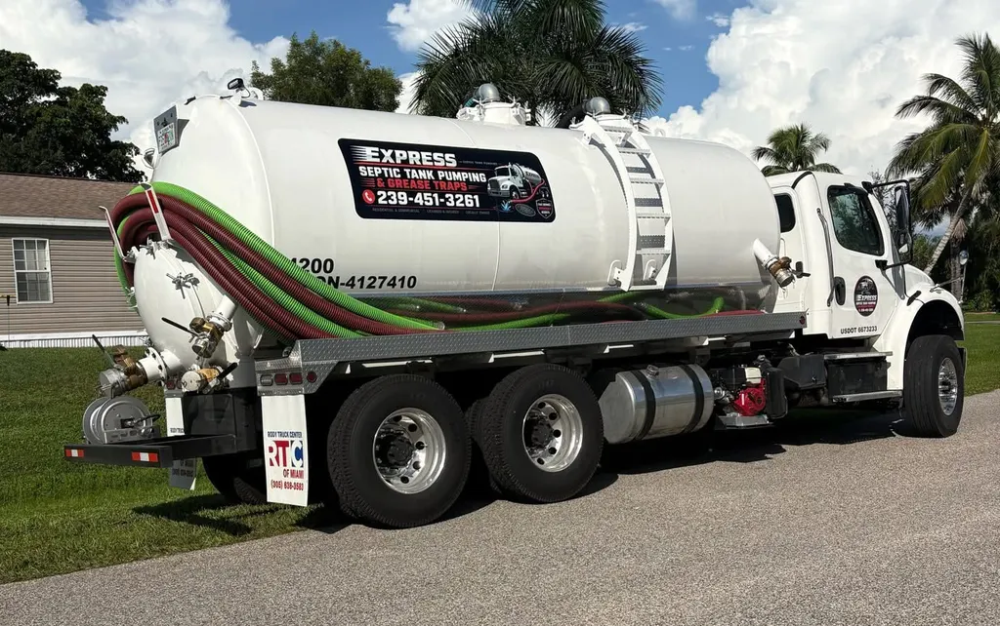
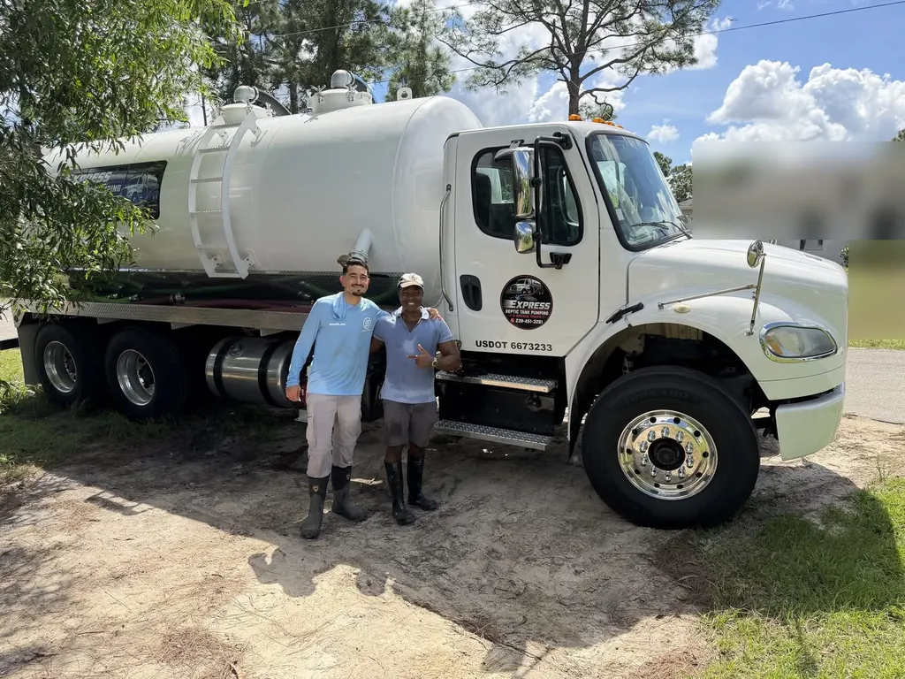

Owner-operated • Southwest Florida
Septic tank pumping in Southwest Florida
Need your tank pumped or dealing with a backup? Call Express to talk through what's happening, confirm service at your address, and get pricing.
Licensed & insured
Night or day, we're available for emergencies. Call (239) 451-3261. For routine service, we can often make it same day when possible.

What we do
Two jobs, done right
Residential septic pumping starting at $399.99
Your final quote depends on tank size, tank access, whether the lid needs locating or digging, and after-hours visits. Call to confirm for your tank.
Also: commercial septic pumping · septic inspections · septic tank cleaning
The truck
A 4,200-gallon split-tank truck

Our truck carries 4,200 gallons split into separate compartments, so it's set up for both septic and grease trap work. In plain terms: one trip can handle a full household tank, and grease stays separate from septic.
- Capacity
- 4,200 gal
- Tank
- Split
- Work
- Septic · Grease
- Coverage
- Licensed & insured
- USDOT
- 6673233
The owner
Meet O'Ryan Atkinson

Express is owner-operated. When you call, you're talking to the person who runs the business. Express is licensed & insured. Honest, reliable and fair — great customer service is our top priority.
Recent jobs
Completed jobs
Photos and notes from recent work around Southwest Florida.
See completed jobsService area
Lee, Collier & Charlotte County
Based in Estero, between Bonita Springs and Fort Myers.
Check your ZIP
Request service
Pick what you need. We'll carry it through.
Call Express now at (239) 451-3261.
Night or day, we're available for emergencies. Call (239) 451-3261. For routine service, we can often make it same day when possible.
Call (239) 451-3261Almost done: finish your request on our ServiceM8 booking page.
Your request hasn't been sent yet. ServiceM8 opened in a new tab; enter these details there:
Reviews
Read what customers say on Google
Our reviews live on our Google Business Profile, where you can read them in full or leave your own.
Open our Google reviewsTalk to Express about your tank
Night or day, we're available for emergencies. Call (239) 451-3261. For routine service, we can often make it same day when possible.